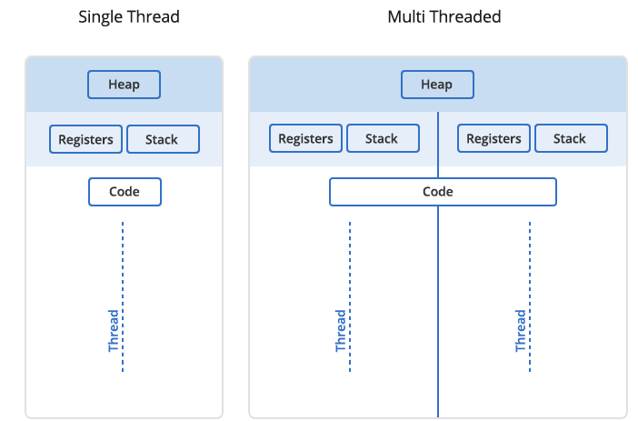
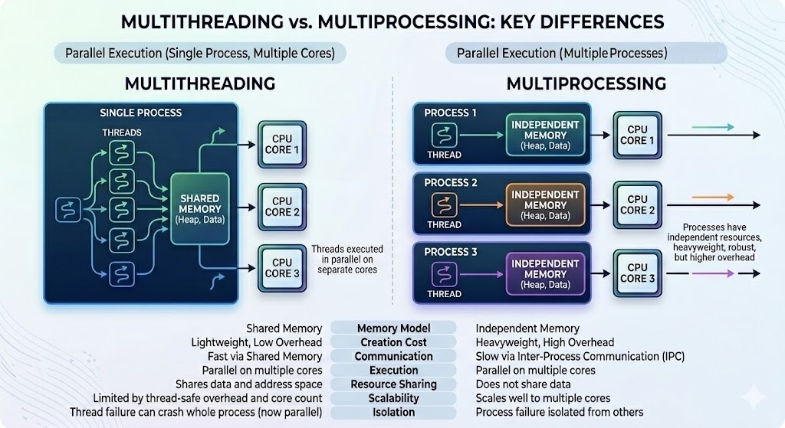
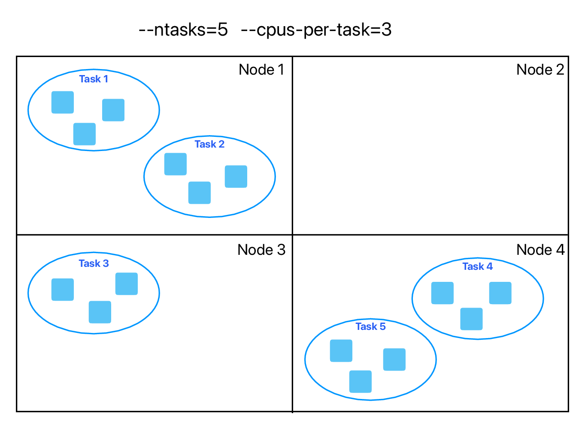

Intro to HPC for R users
March 4th, 10:30am-12:30pm Pacific Time
Instructors: Alex Razoumov and Marie-Hélène Burle (SFU)
Prerequisites: Working knowledge of the Linux Bash shell. We will provide guest accounts to one of our Linux systems.
Software: All attendees will need a remote secure shell (SSH) client installed on their computer in order to participate in the course exercises. On Mac and Linux computers SSH is usually pre-installed (try typing ssh in a terminal to make sure it is there). Many versions of Windows also provide an OpenSSH client by default – try opening PowerShell and typing ssh to see if it is available. If not, then we recommend installing the free Home Edition of MobaXterm.
Materials: Please download a ZIP file with all slides (single PDF combining all chapters) and sample codes. A copy of this file is also available on the training cluster at /project/def-sponsor00/shared/introHPC.zip.
Hardware
Training cluster: 6 compute nodes, each with 4 cores and 15gb memory.
Installing R packages on a cluster
In $HOME
As described in the slides, ~30 mins for the four packages.
In $SLURM_TMPDIR
Since the installation time is dominated by compilation rather than I/O, this is probably not a viable solution.
Threads vs. processes
In Unix a process is the smallest independent unit of processing, with its own memory space – think of an instance of a running application. The operating system tries its best to isolate processes so that a problem with one process doesn’t corrupt or cause havoc with another process. Context switching between processes is relatively expensive.
A process can contain multiple threads, each running on its own CPU core (parallel execution), or sharing CPU cores if there are too few CPU cores relative to the number of threads (parallel + concurrent execution). All threads in a Unix process share the virtual memory address space of that process, e.g. several threads can update the same variable, whether it is safe to do so or not (we’ll talk about thread-safe programming in this course). Context switching between threads of the same process is less expensive.

- Threads within a process communicate via shared memory, so multi-threading is always limited to shared memory within one node.
- Processes communicate via messages (over the cluster interconnect or via shared memory). Multi-processing can be in shared memory (one node, multiple CPU cores) or distributed memory (multiple cluster nodes). With multi-processing there is no scaling limitation, but traditionally it has been more difficult to write code for distributed-memory systems.

You can parallelize your code with multiple threads, or with multiple processes, or both (hybrid parallelization) – see an example below:

What are the benefits of each type of parallelism: multi-threading vs. multi-processing? Consider:
1. context switching, e.g. starting and terminating or concurrent execution on the same CPU core,
2. communication,
3. scaling up.
There is a 3rd level of parallelism on clusters: GPUs.
Computationally intensive statistical models
Can these run in parallel? If yes, do they use shared-memory, distributed-memory, or hybrid parallelism?
- https://cran.r-project.org/web/packages/brms
- https://cran.r-project.org/web/packages/lme4
- https://cran.r-project.org/web/packages/afex
- https://cran.r-project.org/web/packages/ordinal
brms: for parallel chain execution; insidebrm()function you can setcores(default=1, recommends to set to the number of CPU cores on the node, i.e. shared-memory) andthreads(for more control, experimental, only for slowly running models, should not use freely); runsStanin the background, andStancan do multi-threading for within-chain parallelization; can also do multiprocessing- multiprocessing to run multiple chains in parallel? silly idea?
lme4is itself serial, but relies on external BLAS/LAPACK libraries for matrix algebra; if linked against an optimized library (like OpenBLAS or Intel MKL), those libraries may use multithreadingafex: wrapper aroundlme4for frequentist mixed modelsordinal: serial
- typically run Bayesian and CLMM, and mixed-effects logistic and linear regressions with datasets ranging from ~3K to ~15K data points
Resource monitoring
- How much memory will my code use?
- How long will it run?
Finally, you will need to test + understand how your workflows scale with increasing problem sizes and CPU core counts. Here, you should be prepared for plenty of surprises, as scaling behaviour is often non-intuitive, e.g. performance can plateau or even degrade as you add more resources to the problem.